Shear with Radio Galaxy
Polarization & Kinematics
Outline
Motivation
Kinematic Lensing (KL)
Radio Galaxy Polarization
Relevance to TOSCA
Motivation
In cosmic shear analyses, intrinsic galaxy shape is unknown.
Shape noise: source of variance
- need lots of galaxies to beat down noise
Intrinsic alignments: source of bias
Estimates of intrinsic shape can mitigate both!
Kinematics: intrinsic position angle / ellipticity / symmetries
Polarization: intrinsic position angle
Kinematic Lensing (KL)
Intuitive Picture


A Bit of History
- Blain et al. (2002): first proposal of KL
- ideal instruments predicted to be ALMA & SKA!
- ideal instruments predicted to be ALMA & SKA!
- Morales (2006): proposed KL with HI surveys
- relative to continuum surveys:
- line-to-continuum, HI \(\dd N / \dd S\), low-SNR estimators
- line-to-continuum, HI \(\dd N / \dd S\), low-SNR estimators
- relative to continuum surveys:
Gurri et al. (2020): first KL measurement
R.S. et al. (2024): first detection of cluster lensing with KL
Hopp & Witmann (2024): model-independent KL method
leveraging kinematic symmetries
First KL Measurement (Gurri et al. 2020)
18 hand-picked galaxy-galaxy systems: \(\ev{\gamma} = 0.0201 \pm 0.0079\)
- primarily sensitive to \(\gamma_\times\); \(\gamma_+\) degenerate with inclination and scale radius
kinematic shape noise dominates uncertainty:
\(\sigma_k \sim 0.03\) vs. \(\sigma_p \sim 0.2\), so need \(\sim\) 50 times fewer galaxies*
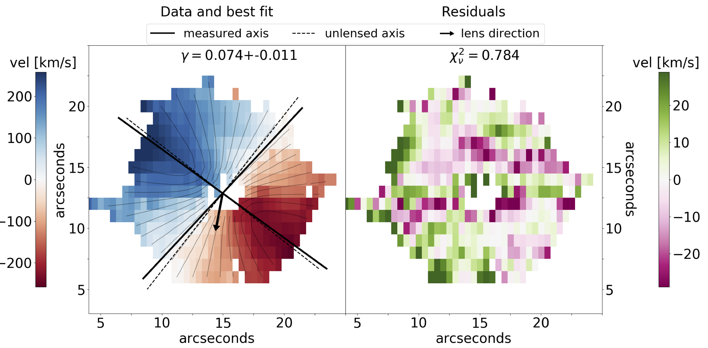
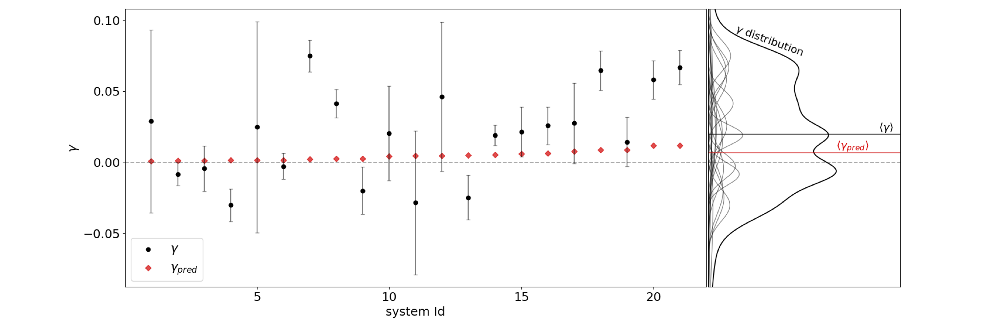
Lower kinematic shape noise when gas & stellar velocity fields match
Point to SKA as enabler of KL at scale!
KL State of the Art (R. S. et al. 2024)
- 141 target galaxies \(\to\) 3 after cuts.
- use Tully-Fisher to estimate inclination \(\implies\) intrinsic ellipticity
- \(\gamma_+\) constrained via Tully-Fisher
- \(\gamma_\times\) via kinematic-photometric misalignment
- per-galaxy SNR > 1, and 10\(\times\) reduction in shape noise!
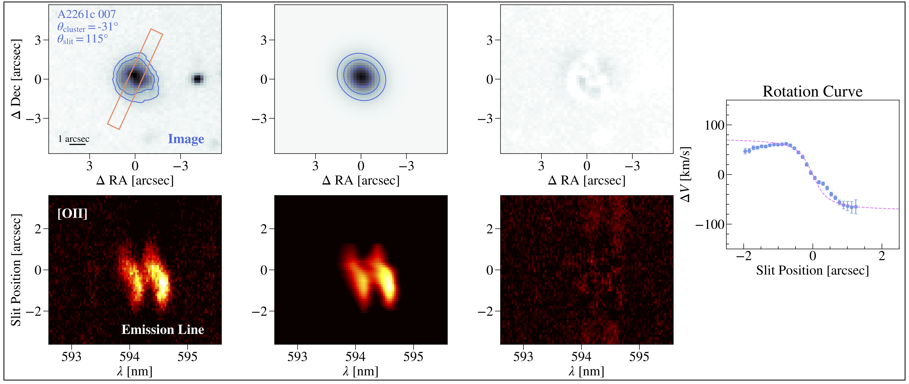
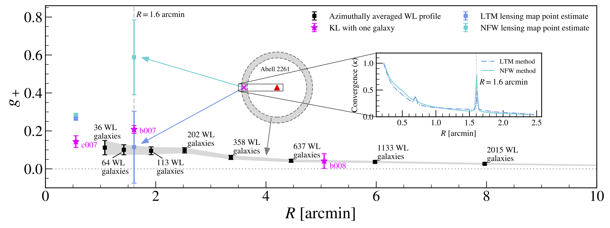
KL Symmetries (Hopp & Witmann 2024)


Almost Feasible with WALLABY?
21 CM H1 survey, 30” resolution, up to z=0.1
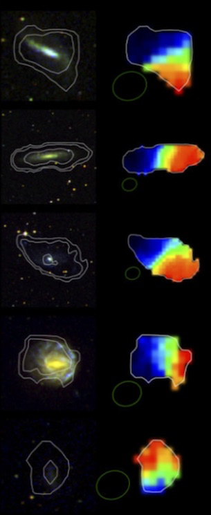
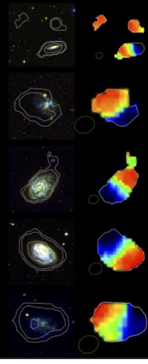
WALLABY website, data from Serra et al. (2015)
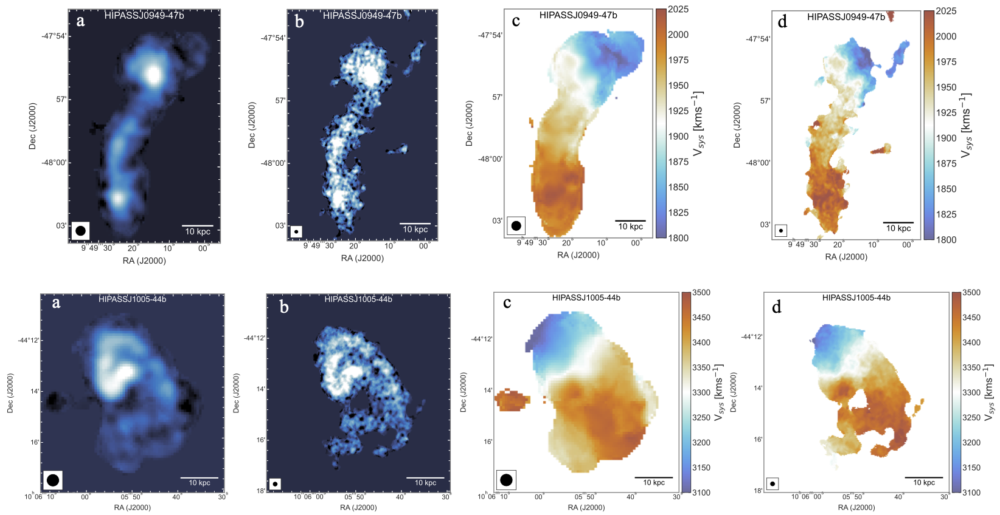
Feasible with ALMA
The ALMA-ALPAKA survey I (Rizzo et al. 2023)
high-resolution CO and [CI] kinematics of star-forming galaxies at z = 0.5-3.5
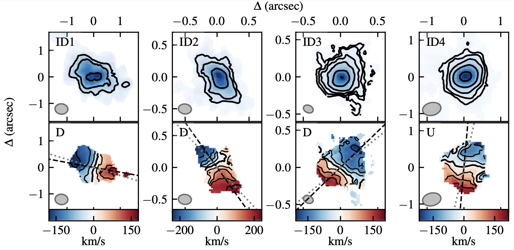

Radio Galaxy Polarization
Intuition
Star-forming galaxies dominate observed sources
- synchrotron emission driven by large-scale galactic magnetic fields
\(\implies\) polarization position angle
- synchrotron emission driven by large-scale galactic magnetic fields
Nearby spiral polarization fractions: 1-10% (Stil et al. 2008)
polarization angle not affected by lensing
- but Faraday effect, and cosmic birefringence..
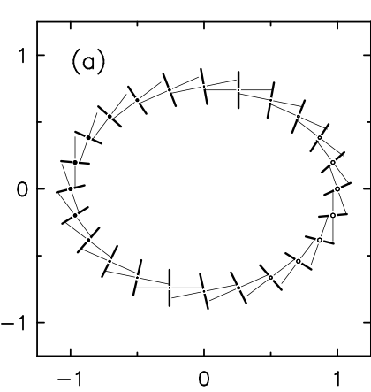
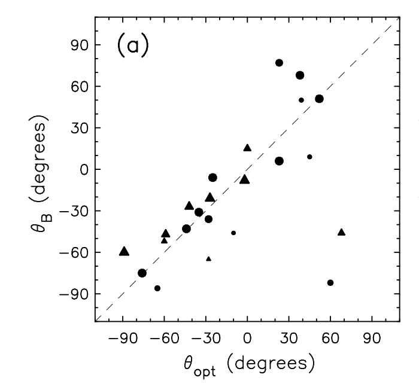
Stil et al. (2008)
Polarization: Some Examples
Slides from a presentation by David Mulcahy
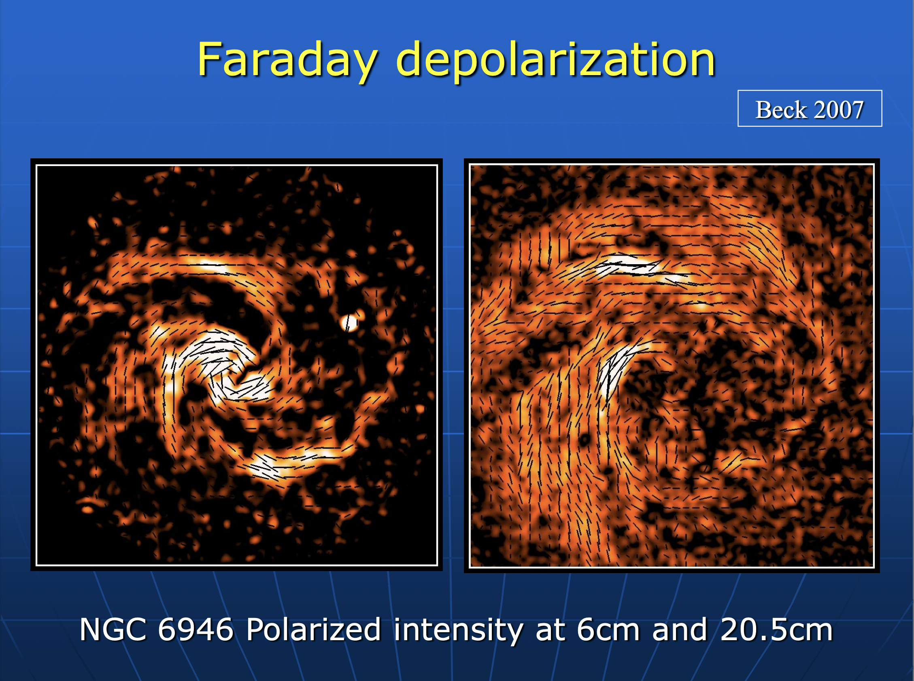
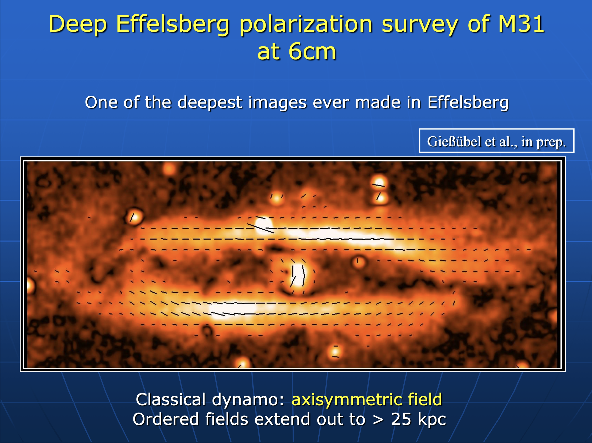
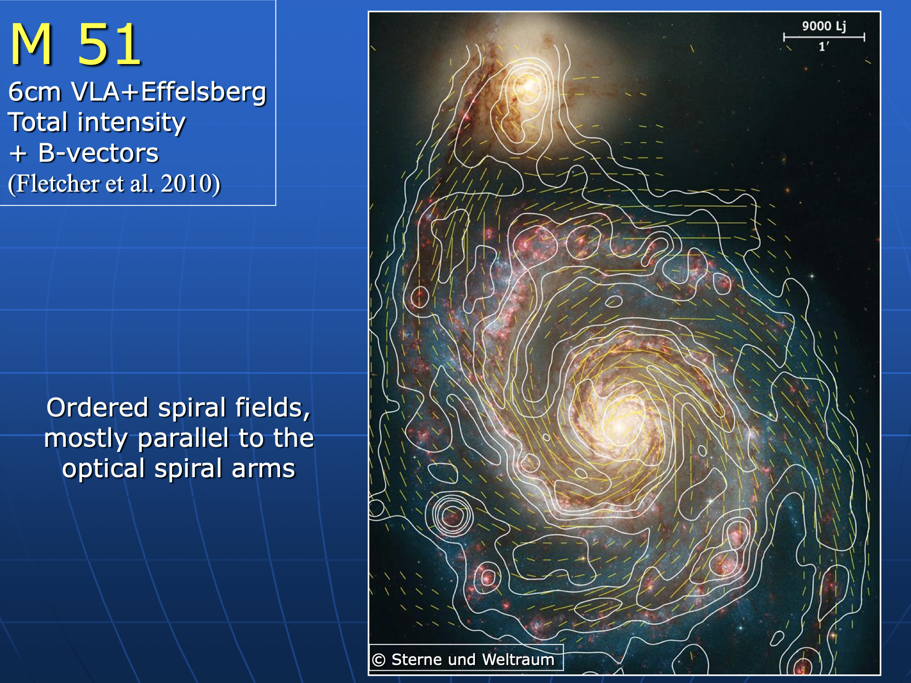
Polarized thermal emission from dust in a galaxy at redshift 2.6
(Geach et al. 2023)
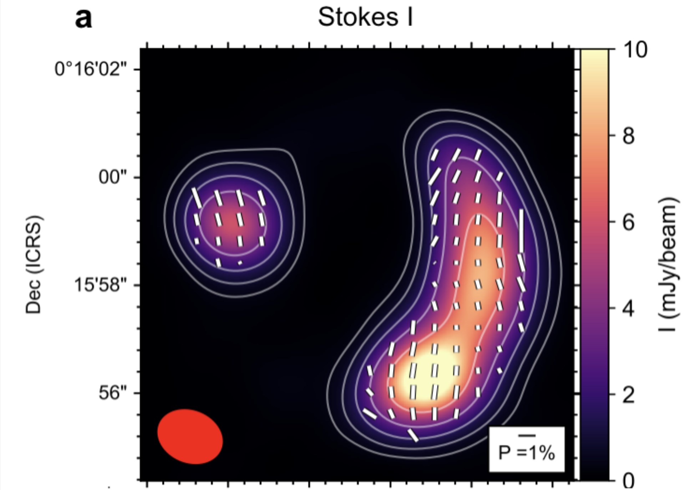
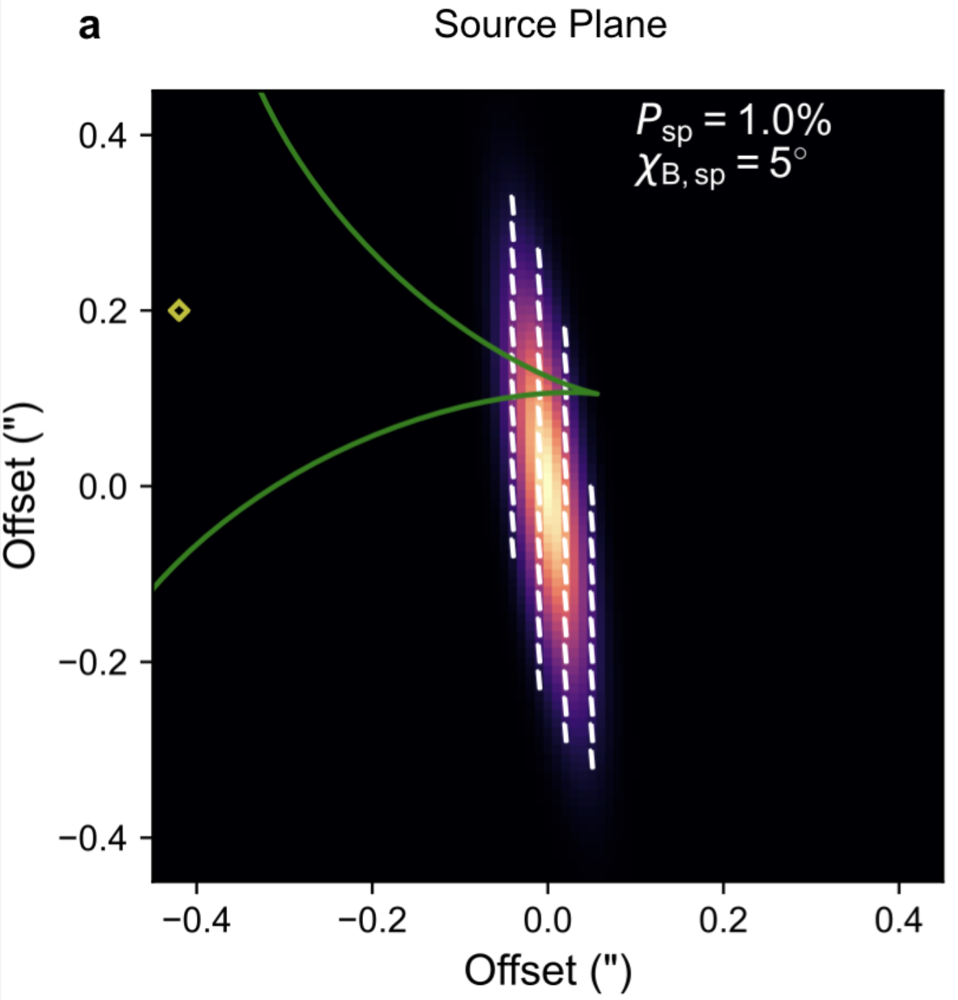
A Bit of History
- Kronberg et al. 1991, Kronberg, Dyer & Roeser 1996, Burns et al. 2004:
lensing measurements with polarized radio jets
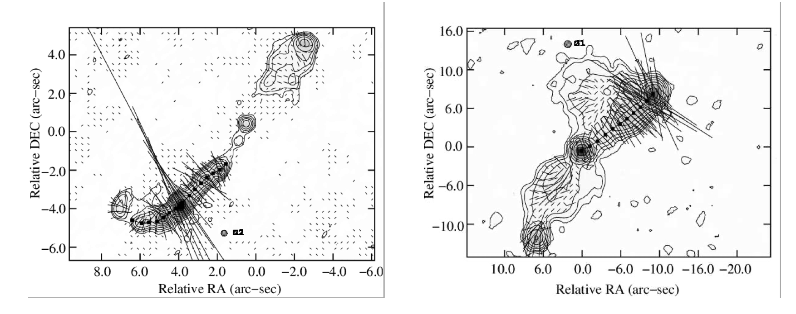
A Bit of History

A Bit of History
- Whitaker et al. (2015, 2018):
- improve upon B&B11 estimator
- quadratic estimator
using pol. vectors combined with finite-difference gradients of Stokes I - estimates of rotation from birefringence:
2.03º \(\pm\) 0.75º (authors caution Farrady rotation systematics)
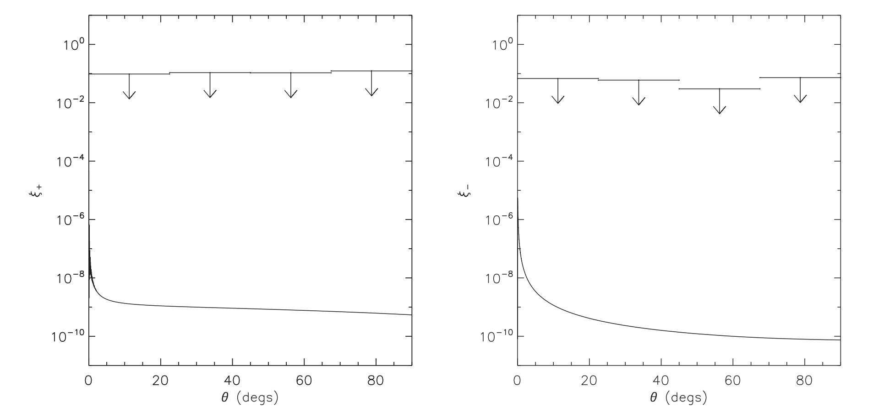
Weak Lensing Rotation
Tensor & vector gravitational potentials allow for
a rotation mode \(\omega\) in addition to \(\gamma\) and \(\kappa\):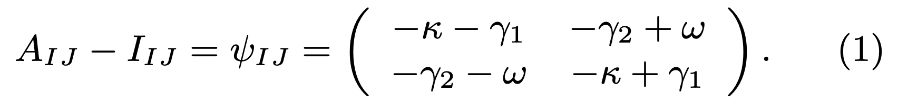
- only measurable if source-plane position angle can be estimated
- only measurable if source-plane position angle can be estimated
Second-order effect in \(\Lambda\)CDM, post-Born/lens-lens coupling
- should be equivalent to shear \(B\)-modes
\(\implies\) systematics (or \(\Lambda\)CDM) null test
- should be equivalent to shear \(B\)-modes
- Can solve simultaneously for shear and rotation from lensing
A new observable for cosmic shear
Francfort, Durrer, & Cusin (2022)
Estimator based on correlation function of lensing-induced rotation itself.
For a single galaxy:
\(\alpha\) is position angle; \(\delta \alpha\) is lensing-induced rotation \[\Theta = \frac{2 - \epsilon^2}{\epsilon^2} \delta \alpha = \gamma_2 \cos 2 \alpha - \gamma_1 \sin 2 \alpha\]
For a pair of galaxies 1,2: \[\Xi = \Theta(\vb n_1, \alpha_1, z_1) \Theta(\vb n_2, \alpha_2, z_2)\]
Estimator averaging over \(\Xi, \Xi'\) pairs (4-pt?):
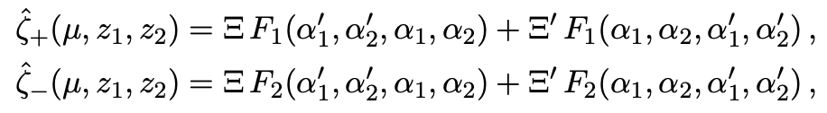
Summary
Observables:
Optical photometric shape
Radio intensity shape
Optical kinematics
Radio kinematics
Radio polarization
Seems not-quite-there with current datasets..
perhaps estimator proof-of-concept / recovery of null shear
could hand-pick systems,
but probably not yet interesting for cosmology in the near future
Relevance to TOSCA
What interesting things can we do in the timescale of TOSCA?
Joint shear reconstruction (with ML?)
ASKAP pathfinders (WALLABY, POSSUM)
ALMA proposal, or archival data scraping?
Calibration
- what can we do if we know something about the intrinsic shape
of 0.1% of Euclid galaxies?
- what can we do if we know something about the intrinsic shape